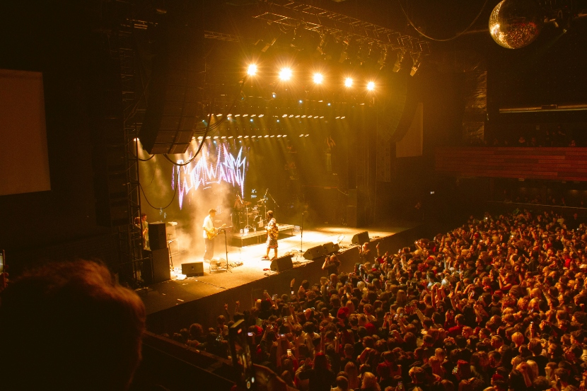
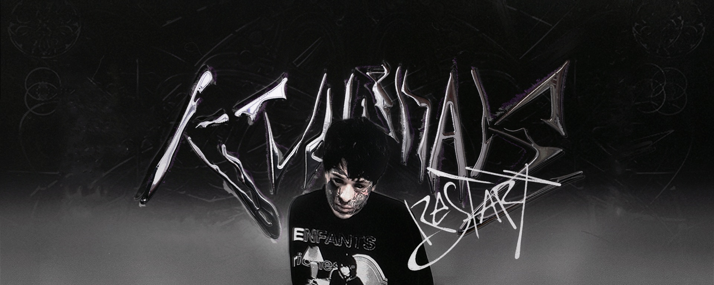
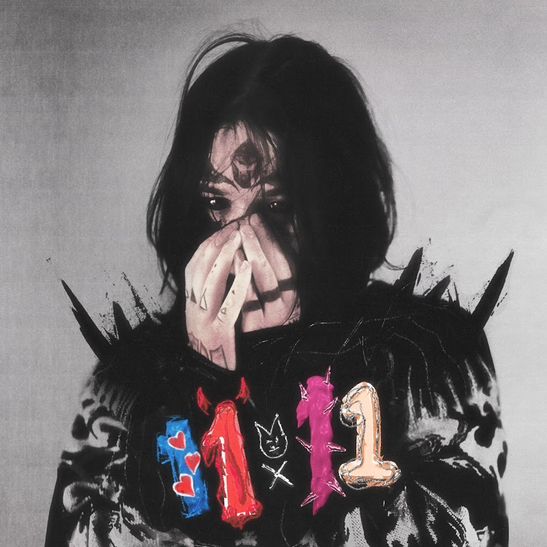
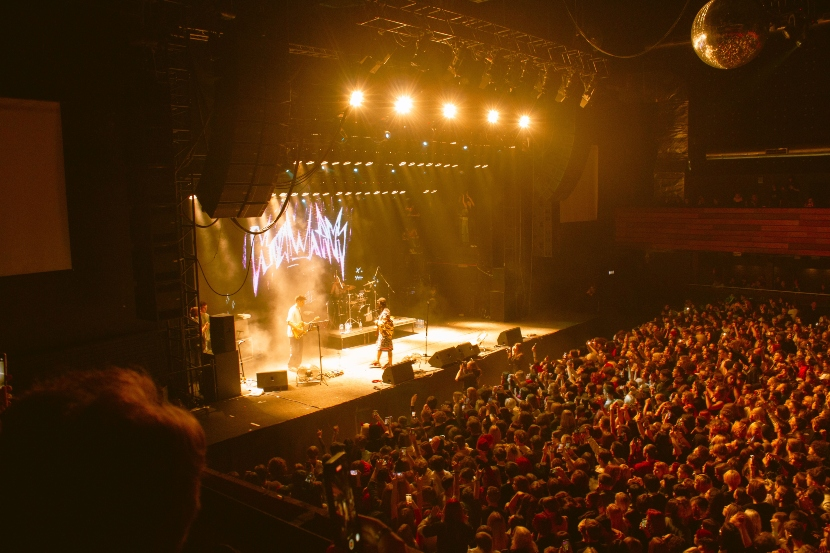
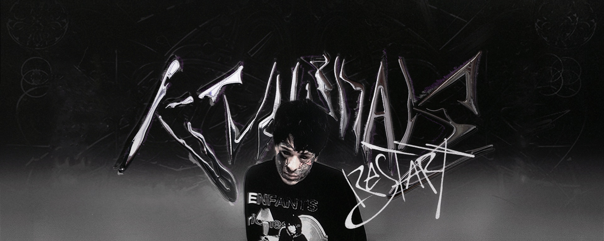
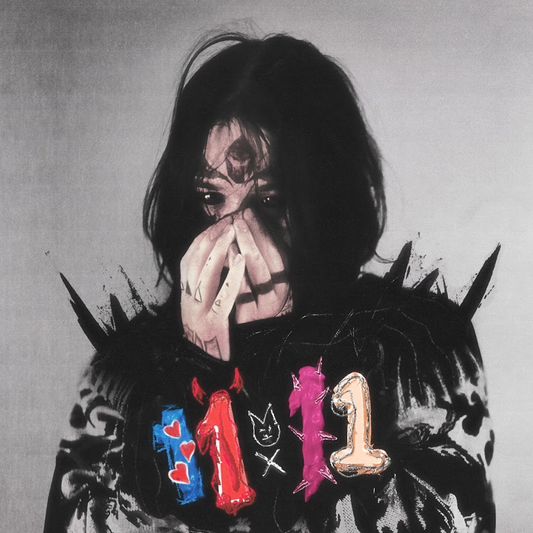
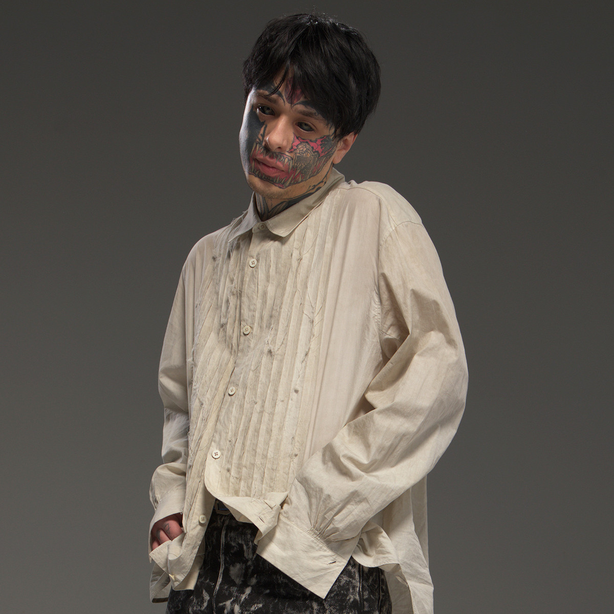
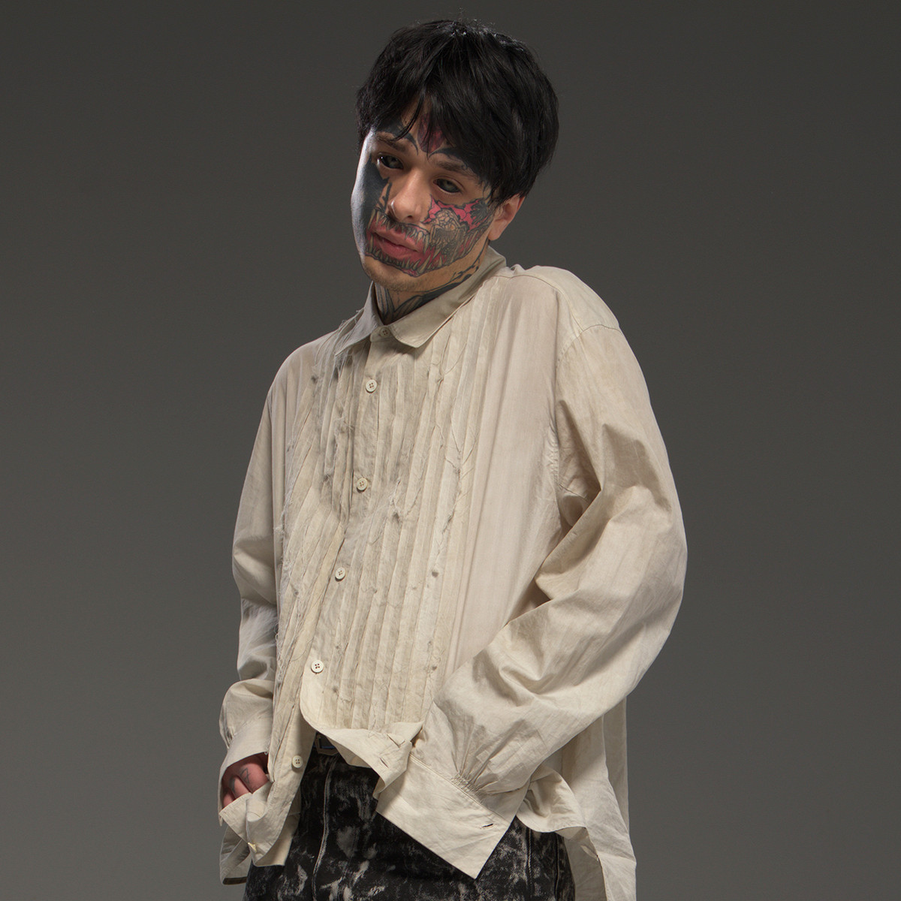

ЧТО ЗА ПРОЕКТ КИШЛАК?
Кишлак - мой псевдоним. Я исполняю альтернативную музыку с элементами рэпа, рока, лоу-фай. Родился я в городе Североморск в 1998 году. Именно так называется местный Авиагородок. Именно этим можно объяснить мой псевдоним "Кишлак".


 





 

“Когда ты уже сдохнешь, мефедронщик!”, “Иди нахуй!”: так Кишлака встречают несколько тысяч подростков, которые пришли на его первый большой сольный концерт в московском “Главclub”. На улице четыре “скорых помощи”, места в гардеробе закончились, зал переполнен вчерашними школьниками, от которых воняет потом и алкоголем из супермаркета — дорожка ко входу в клуб, где еще недавно пели хором песни Кишлака, завалена пустыми бутылками. Максим Фисенко — это настоящее имя артиста — собрал вокруг себя бедовых мальчиков и девочек, а понравиться молодой, но уже разочаровавшейся и едкой аудитории, непросто. Единственный способ это сделать — быть одним из них, жить ровно ту жизнь, о которой твои песни: со шрамами на запястьях и “Блейзером”.
Необязательно, что лирический герой Кишлака — это точная копия Максима Фисенко, но, судя по его опыту, вполне может быть. Максиму 24, он из Североморска, закрытого города на Кольском полуострове в 25 километрах от Мурманска. Про него он поет в песне “Мир для женщин”: “Ты лечишь себя седативным препаратом / А я лечусь, когда лечу под Мурманск на сто пятом”. Кишлак — неофициальное название местного района Авиагородок: говорят, что раньше авиационный полк Североморска располагался в Центральной Азии, а после его перевода в город служившим в нем людям стали выдавать квартиры в Авиагородке, и слово “кишлак” прилипло само собой.
Максим плохо помнит свое детство, и, если послушать запись разговора с его мамой, залитую на YouTube неизвестно кем, становится понятно, почему: от воспоминаний про их жизнь с отцом становится конкретно не по себе.
“Как только он выпивал — ты этого не помнишь, малюсенький был, но уже разговаривал, — он меня бил. Я тебя прикрывала, около кроватки сидела. По батареям стучала, и Ленка Леонова, на первом этаже которая была, прибегала и забирала тебя, в одеяло укутав. И я так думаю, все это по наследству передается, и ты агрессивный, когда пьяный. Ты в этом не виноват, это я все к тому, что, пожалуйста, пей в норму. Это не моя вина, что у нас такая жизнь произошла”, — захлебываясь слезами, говорит мама Максима.
“Ты ударился носом, тебе нужна была помощь — не дай бог, сотрясение головы — тебе полтора годика было. Я ему сказала “Срочно вызывай “вертушку”, а он сказал, что не будет, потому что скажут, что ложный вызов. И вот на санях повезли тебя делать томографию. Этот пидорас не захотел ничего делать. Я его ненавижу”, — рассказывает женщина. “Может, поэтому я такой ненормальный?”, — спрашивает ее Максим. Слушать этот личный разговор тяжело и неловко: в нем очень много боли, и не надо быть психологом, чтобы понять, как все это могло отразиться на Максиме.
“Звонок в дверь: соседка с третьего этажа [говорит]: “Там твой сын лежит. Я к тебе подбегаю, а ты на ступеньках. “Соседи! Это он не осознанно!” Ты понимаешь, как на меня смотрят?”, — спрашивает его мама. Максим смеется и просит прощения.
В 14 лет Максим начал заниматься музыкой — тогда же он придумал проект “Автостопом по фазе сна” или “АПФС”, для которого записывал треки на диктофон. Спустя какое-то время Максим его забросил и продолжил эксперименты — вот целый список его ранних проектов: “писък”, “Солнечный Муслим”, “русалочье урочище”, "bisexual from the village", "DJ Makson".
Когда Максим все же вернулся к “АПФС”, у него появилась первая аудитория, которой зашли его откровенные песни про наркотики, секс и суицидальные мысли: мрачный, тяжелый мир, где много боли, разочарования и зависимостей. У "Автостопом по фазе сна" есть клип "Я впадаю в кому", который начинается с кадров документальной съемки из начала нулевых: служба спасения откачивает двадцатилетнего парня, по всей видимости, пострадавшего от наркотиков. Далее зритель попадает в антураж уже нашего времени: Максим вместе с друзьями бухает "Блейзер", лазает по заброшкам и темным лестницам в подъездах. Все вместе это создает гнетущую картину неустроенного мира провинциального неблагополучного подростка, который часто ненавидит всех, но прежде всего себя
Трек записан абсолютно не качественно, но слушателей это не останавливает — под видео много комментариев в духе: “Люди, такая музыка не обязана цеплять качественным битом и прочей херней. Для этого есть всеми любимые позеры. Здесь вывозит именно плохой звук. Такую музыку поймут лишь те, кто идет по схожему пути. Это музыка не для теплых посиделок”. Или: “Его музыка до сих пор очень нравится и спасает меня, если бы не “АПФС” и Кишлак, то давно уже вскрылся, а то и хуже, его музыка спасает и вывозит не качеством, а смыслом”. “Автостопом по фазе сна” привлекал грязным звуком, описаниями опасного поведения и концентрированным мрачняком. Взять, к примеру, самую популярную песню “АПФС” “Опианариум”:
У “АПФС” много поклонников, и в сети есть фанатские паблики и видео, ностальгирующие по тому периоду. К примеру, в видео ниже можно увидеть Максима в белой рубашке и еще без татуировок на лице, который поет под гитару песню “Эхо 51”: “На пороге стоит моя смерть / Но я не дам себе сгнить от старости / Мой побитый, ржавый мозг не замечает уже усталости / Не хочу я слышать в ответ: “Ты такой же как все прототипы” / Я уйду и останусь никем, но сломаю стереотипы”.
В 2020 году Максим закрыл проект: “Я начал понимать, что музыка, которую я делаю, несет не тот посыл, который я хотел. Люди думали, что употреблять наркотики — это очень круто и весело, начали подхватывать мою движуху. А в “Автостопом по фазе сна” я хотел донести до людей, что не надо жить так, как я, что это была сатира на самого себя. Но не все это поняли”.
В то время он не знал, как выкладывать музыку в стриминги, и просто загружал свои треки во “ВКонтакте” без монетизации. Тогда же какой-то парень залил песни “АПФС” на площадки без ведома артиста и поменял названия оригинальных треков — по словам Максима, на тот момент у них было около миллиона прослушиваний.
Роялти со стримов получал мошенник, и вернуть песни Максиму удалось только при помощи лейбла Sony, с которым он начал сотрудничать уже как артист Кишлак. Трек “Возвращайся” отсылает к этой истории: “А завтра я, наверное, скорей всего умру / Ты обнаружишь тело в своей собственной кровати / Возьми все мои песни, пока я лежу в гробу / И выдай за свои, но поменяй у них название”.
В интернете говорят, что Максиму диагностировали диссоциативное расстройство, при котором человек идентифицирует себя с несколькими личностями: обычно оно возникает у людей, переживших в детстве сильный стресс или травму. Отсылка к этому есть в треке “Сборник хуйни и картинки” с одноименного альбома Кишлака: “Она хочет меня, чтобы двое / Но в моей голове еще десять голов / Они все тут немного со странностями”.
“Вот моя справка о том, что я придурок. Поставили мне расстройство личности какое-то, и в армию я не пойду”, — рассказывал Максим.
На видео у него уже залиты белки глаз черной краской — по сути, это инъекция с пигментом, который вводится в глазное яблоко: вывести его невозможно. В 2017 году Максим работал на мойке, и коллеги буллили его за внешность. Говорят, это стало для него триггером — музыкант украл выручку из кассы и как в криминальном фильме рванул с девушкой на вокзал, где его и задержала полиция. Позже уголовное дело по 158 статье закрыли, потому что Максим “деятельно раскаялся”, “утратил общественную опасность” и возместил ущерб на сумму 86 с лишним тысяч рублей.
Постепенно Максим стал покрывать свое лицо татуировками, а сейчас оно забито почти полностью. На левой щеке у него изображение девушки, которое стало кавером для неудачной татуировки с рунами: Максим бился у пьяного тату-мастера и был пьян в тот момент сам. Как он рассказывал, какой-то фанат сделал на лице такую же татуировку, как у него, и даже добавил к ней фрагмент неудавшейся руны, как у Максима. Тот назвал поклонника долбоебом.
Максима периодически сравнивают с Джизусом — в том числе, из-за образа. Сложно сказать, пытался ли он когда-то ему подражать (потому что стиль Джизуса по большому счету тоже придумал не Джизус), но он респектовал ему за старое творчество и говорил, что хотел бы сделать фит. Вот как The Flow писал об альбоме Джизуса "47: Revolution and World": “47" звучит как бесконечная война артиста с окружающим миром — он разочарован в людях вокруг, в сверстниках и эпохе, много говорит об незащищенности и страхе перед миром, а также отчаянно ищет тех, с кем разделить эту ношу”. Похоже ли это описание на мотивы творчества Кишлака — проекта, который наследовал “АПФС”? Похоже. Но это другое.
Первый альбом под псевдонимом Кишлак вышел в 2020 году — он называется “11:11” и записан при помощи одноименного продакшн-комьюнити Максима, в нем еще состоят артист “семьсот семь”, продюсер и исполнитель bvbvbvbudvbv, а также дизайнер Xenge. “11:11 означает смену эпох и зарождение нового мира, который движется к единству. 11:11 — это пусковой механизм и ключ к тайнам Вселенной”, — сказано в описании его паблика. С тех пор аудиотег “11:11” звучит почти в каждом треке Кишлака.
Самый популярный трек с альбома — “Грязь” — представляет собой несколько раз повторенный припев: в первый раз он исполняется а капелла, а затем дополняется энергичным битом и завершается короткой клавишной партией. Экспрессивную песню про сложные отношения послушали в Spotify больше трех миллионов раз.
Следующий альбом — “Сборник хуйни и картинки” — Максим выпустил уже в статусе подписанта Sony. Релизы с матом в названии, а также с полным набором “запрещенных” тем в текстах, непросто продвигать в современных российских реалиях. Но у Кишлака уже была аудитория, которой не требовалось рассказывать, в чем его прикол. В то время, когда Мукка запикивал слово "мефедрон" в своем главной хите “Девочка с каре”, а Soda Luv мьютил все, что можно воспринять как “пропаганду”, Кишлак пел про то, как “гуляет в астрале с корзиной грибов”, говорил про сальто с крыши и шифровал послание бывшей в треке под названием “Alfa-Pvp”. Это действительно сборник: историй о парне, который не в ладах и с самим собой, и с миром и прячется от всего этого в употреблении и любовных драмах.
Один из самых прослушиваемых треков с альбома — “Дрочу на твои фото” — посвящен воспоминаниям о той, с кем когда-то было хорошо, а трогательное признание “Но походу мне не повторить ни с кем больше такого флёрта / Я просто улыбаюсь и дрочу на твои фото” представляет собой квинтэссенцию горячей и наивной юношеской похоти.
В конце 2021-го трек “Я уебываю в джаз” завирусился в TikTok (с тех пор его послушали в Spotify почти девять миллионов раз), и к артисту пришла новая аудитория. Люди, которые снимали тиктоки под веселый звук “Я спасу тебя от одиночества”, попадали во вселенную Кишлака, собранную из ментальных расстройств, зависимостей и неустроенности. Хотя даже если послушать эту песню полностью, становится ясно, что строчка “Мы плывем будто под герой, будто все как в первый раз” — совсем не обязательно фигура речи.
Тогда же Максим перебрался в Москву (и в честь этого сделал ещё один альбом под названием "Эскапист", о котором поговорим чуть позже), поехал в свой первый тур и стал попадать в ролики вроде "Они взорвут в 2022 году". Он заканчивал год в статусе активно растущего артиста, собравшего вокруг себя лояльную аудиторию из таких же, как он: едких, потерянных и депрессивных, тех, кто пережил много боли и тех, кому творчество Кишлака стало опорой.
В начале марта 2022-го — мягко говоря, неподходящее время для новой музыки — у Кишлака вышел еще один большой релиз. Максим сопроводил его следующими словами: “Веселиться одним, пока плохо другим — это ужасно, но мой альбом не про веселье, он про ту жизнь, что нас окружает, он про чувства, которые мы испытываем под давлением всего, он про чувство любви и про чувство ненависти, про чувство жизни и про чувство обратного, того что является лишь вопросом времени для каждого из нас. Не забывайте: "Ад пуст, все демоны здесь". Дорогу молодым!”.
В “Эскаписте” Максим впервые отказался от грязного звука, сделанного на коленке, и, если почитать комментарии к релизу, не вся аудитория это приняла. На претензию о том, что он “опопсел” Кишлак ответил в ските к треку “Двинулся на тебе”: “Но многие из вас говорят, что я, типа, опопсел, вся хуйня там. Типа, я сам слушаю попсу. Ваще ее обожаю, блядь, больше чем этот ебаный эмо-кор, блядь, и рэп, блядь”.
У Максима даже есть записанный кавер на "Она одна" “Ранеток”: говорят, что он должен был войти в “Сборник хуйни и картинки”, но, видимо, из-за правовых вопросов, так и не вышел официально.
Вместе с тем “Эскапист” устроен более разнообразно, чем предыдущие релизы: громкие гитары, клавишные партии, речитатив, танцевальные биты, отсылки к Lovv66 (“Да ну нах”) и аниме “Наруто” (“Тень”). Однако магистрально темы там все те же — Максим много рассказывает о своей жизни (“У меня с четырнадцати лет запой”), оторванности от остального мира (“Вокруг столько людей, но они все мне не помогут / Я ненавижу каждого на всей этой земле”) и связях с такими же, как он (“И под одеялом трогая на ощупь / Обнаружим порезы на теле друг друга”). К уже привычной рефлексии о боли и зависимостях добавились еще и мысли о своей новой жизни: в начале альбома Москва только “подъедает” лирического героя, а ближе к концу она его уже “схавала”. В треке “Эскапист” Максим говорит, что “научился избегать проблемы все во сне”, но мотив побега от себя проявляется еще и в употреблении, куда он попадает то “по течению реки из выпитых бутылок”, то с помощью пакета, куда “вылит суперклей”.
Кишлак задумывался как проект, который не будет романтизировать зависимости, и справляется ли он с этим, вопрос спорный. На этом поле он так или иначе пересекается с “Три дня дождя”, чей лидер Глеб Викторов открыто говорит о проблемах с алкоголем в интервью и затрагивает темы веществ в своих песнях. Максим и Глеб из “ТДД” даже схлестнулись в прошлом году в бифе, но по большому счету, сравнения в чью-либо пользу тут не уместны: по ощущениям, “Три дня дождя” — это вишневый “Гараж”, а Кишлак — дезоморфин.


{kind=link}